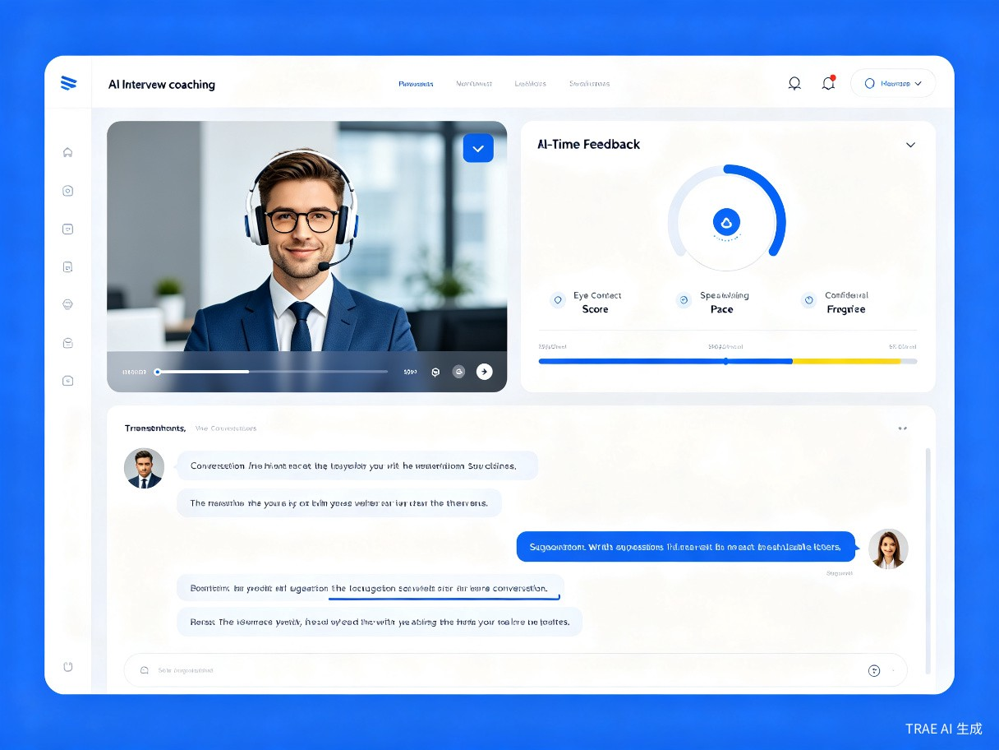
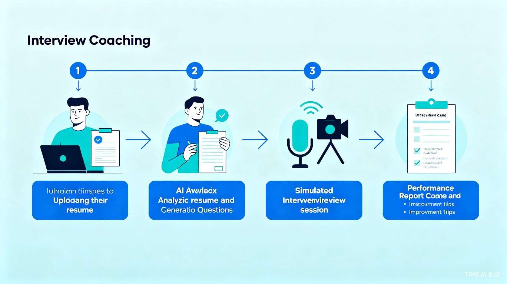

学习工作赛道
Web 应用
基于 TRAE Work 构建
一、创意名称与介绍
创意名称
面霸教练 — 一款 AI 驱动的面试模拟与训练工具
想解决什么问题
面试是求职中最关键也最让人紧张的环节。很多求职者——无论是应届生还是职场老手——在真正面对面试官时，常常因为紧张而发挥失常、回答不够有条理、或者缺乏应对技巧。市面上缺少一个低成本、高频率的模拟面试工具，让求职者能随时练习。
为什么会想到做这个
身边不少朋友在求职季都经历过"面试焦虑"：明明准备好了，但一开口就紧张、语无伦次。如果有一个 AI 面试官，能根据你的简历和岗位要求，生成针对性的问题，模拟真实的面试场景，还能给反馈和改进建议，求职准备就会高效很多。
大概是什么产品
一个 Web 应用，用户上传简历并选择目标岗位后，AI 化身面试官进行语音/文字模拟面试，结束后生成多维度评分报告和改进建议。
二、目标用户及痛点
面向哪些用户
- 应届毕业生 — 第一次经历求职面试，缺乏经验
- 准备跳槽的职场人 — 面试机会有限，需要更高效的练习方式
- 留学生/海归 — 需要适应国内面试风格和问题
- 转行求职者 — 跨领域面试，需要用新思路回答问题
在什么场景下使用
- 收到面试通知后，针对性地熟悉目标岗位常见问题
- 每天花 15-30 分钟进行碎片化练习
- 面试前进行全真模拟彩排
- 针对性提升某个弱项（如行为面试、技术面试、英文面试）
当前痛点
- 没有真人陪练，自己练习无法模拟真实面试氛围
- 面试机会有限，一次失误可能就错失心仪工作
- 不知道自己的回答在面试官眼里好不好，缺乏客观反馈
- 无法针对性提升薄弱环节，练习效率低
三、核心功能
📄
简历智能解析
上传简历，AI 自动提取经历、技能、项目，生成个性化面试题
🤖
AI 真人模拟面试
AI 化身面试官，支持语音/文字互动，模拟真实面试问答节奏
📊
多维度评分报告
从逻辑清晰度、表达流畅度、内容完整性、岗位匹配度四个维度打分
🎯
针对性改进建议
为每个问题提供示范回答和改进方向，帮你越练越好

四、用户使用流程

核心体验：3 步搞定面试准备
第 1 步：上传简历，选择目标岗位和面试类型
第 2 步：开始 AI 模拟面试，实时回答 AI 面试官的问题
第 3 步：获取面试评分报告，查看每个问题的改进建议
50+
覆盖岗位类型
4 维
评分维度
24/7
随时练习
五、价值与意义
降低求职成本
相比昂贵的面试培训班，免费或低成本即可获得高质量的面试练习，让求职过程更加公平
提升面试通过率
通过高频次、有反馈的练习，帮助用户在真正面试时更有信心、表现更好
打破地域限制
无论身处何地，只要有网络就能获得专业的面试辅导，帮助更多人找到理想工作
六、技术方案
基于 TRAE Work 构建
本产品将使用 TRAE Work 进行开发，充分利用其 AI 原生能力：
- 前端界面：使用 HTML/CSS/JavaScript 构建响应式 Web 应用
- AI 能力：调用大语言模型进行简历解析、面试提问、回答评估
- 语音交互：支持语音识别和语音合成，模拟真实面试对话
- 面试题库：覆盖常见行业岗位的面试问题库，持续更新